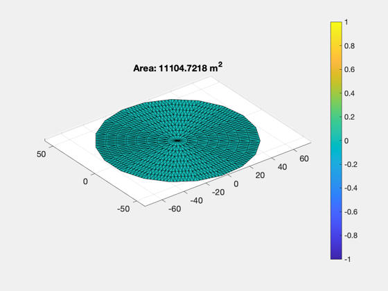
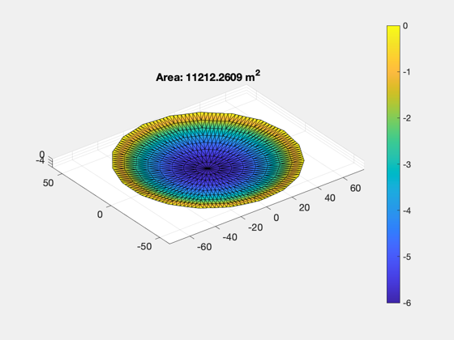
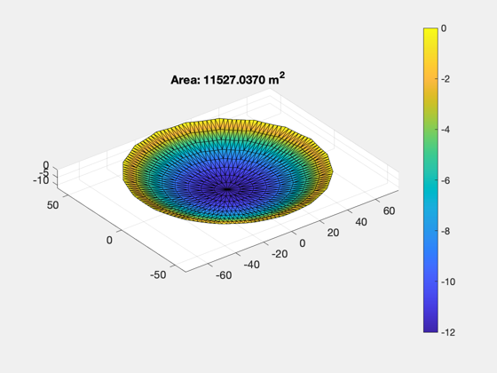
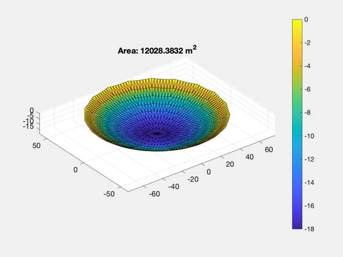
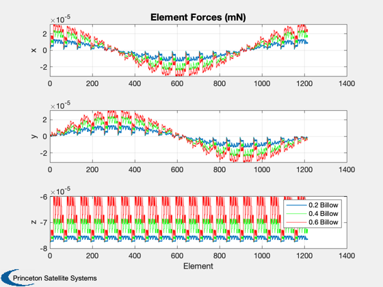
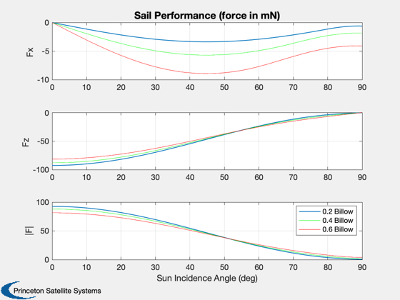
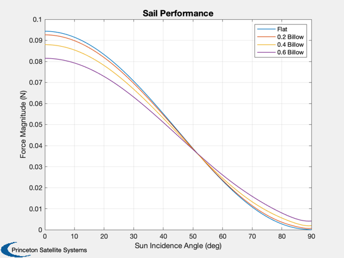
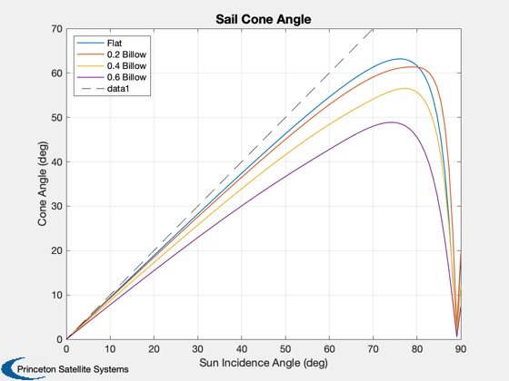
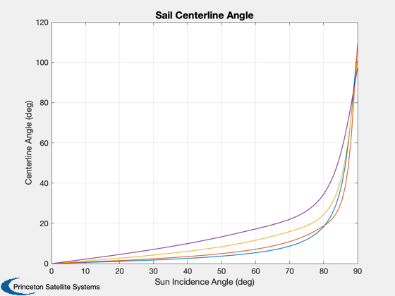
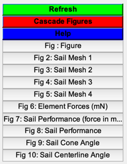

Compare the solar pressure force for flat and billowed circular sails.
Since version 7. ------------------------------------------------------------------------ See also SailMesh, HCircularBillow, SolarPressureForce, PolygonProps, Figui, NewFig, Plot2D, Dot, Mag, Unit, SolarFlx, CP1Props ------------------------------------------------------------------------
Contents
%------------------------------------------------------------------------------- % Copyright 2009 Princeton Satellite Systems, Inc. %------------------------------------------------------------------------------- % These sails have a nominal front normal of [0;0;1], +Z.
Circular sail perimeter
%------------------------ theta = linspace(0,2*pi,20); theta = theta(1:end-1); rSail = 60; % m x = rSail*cos(theta); y = rSail*sin(theta); b = [0; 0.2; 0.4; 0.6];
CP1 properties - 90% specular
%------------------------------
[optical, infrared, thermal] = CP1Props;
Solar flux at 1 AU
%--------------------
flux = SolarFlx( 1.0 );
Create a vector of incidence angles in x/z plane
%------------------------------------------------- theta = linspace(0,pi/2); nPts = length(theta); uSun = [sin(theta);zeros(size(theta));cos(theta)]; fElements = cell(1,4); fTotal = cell(1,4); coneAngle = zeros(4,nPts); centerAngle = zeros(4,nPts); Tavg = []; for k = 1:4 dBillow = struct('b',b(k),'r',rSail); [v,f] = SailMesh( x, y, 'HCircularBillow', dBillow, 3 ); [a, n, r] = PolygonProps( v, f ); NewFig(['Sail Mesh ' num2str(k)]); patch('vertices',v,'faces',f,... 'facevertexcdata',v(:,3),'CDataMapping','scaled',... 'facecolor','interp','edgecolor',[0 0 0]); axis equal; grid on; view(3); colorbar nEl = length(a); % display the total membrane area for each sail area = sum(a); title(sprintf('Area: %.4f m^2',area)) fSail = zeros(3,nPts); % Compute the force and temperature of each element %-------------------------------------------------- for j = 1:nPts [fEl, T, fT] = SolarPressureForce( a', n', uSun(:,j), flux, ... optical, thermal.emissivity ); if j == 1 fElements{k} = fEl; Tavg(k,:) = T; end fSail(:,j) = fT; end coneAngle(k,:) = acos(Dot(Unit(fSail),-uSun)); centerAngle(k,:) = acos(Dot(Unit(fSail),-[0;0;1])); fTotal{k} = fSail; end   
Plot the element forces for incidence angle of zero
----------------------------------------------------
sailLabl = {'Flat', '0.2 Billow', '0.4 Billow', '0.6 Billow'};
Plot2D(1:nEl, fElements{2}, 'Element', {'x','y','z'}, 'Element Forces (mN)');
subplot(3,1,1)
hold on
plot(1:nEl, fElements{3}(1,:), 'g');
plot(1:nEl, fElements{4}(1,:), 'r');
subplot(3,1,2)
hold on
plot(1:nEl, fElements{3}(2,:), 'g');
plot(1:nEl, fElements{4}(2,:), 'r');
subplot(3,1,3)
hold on
plot(1:nEl, fElements{3}(3,:), 'g');
plot(1:nEl, fElements{4}(3,:), 'r');
legend(sailLabl{2:4})
 Plot the results
%----------------- angles = theta*180/pi; aLabl = 'Sun Incidence Angle (deg)'; Plot2D(angles, [fTotal{2}([1 3],:);Mag(fTotal{2})]*1000, aLabl,{'Fx','Fz','|F|'},'Sail Performance (force in mN)'); subplot(3,1,1) hold on plot(angles, fTotal{3}(1,:)*1000, 'g'); plot(angles, fTotal{4}(1,:)*1000, 'r'); subplot(3,1,2) hold on plot(angles, fTotal{3}(3,:)*1000, 'g'); plot(angles, fTotal{4}(3,:)*1000, 'r'); subplot(3,1,3) hold on plot(angles, Mag(fTotal{3})*1000, 'g'); plot(angles, Mag(fTotal{4})*1000, 'r'); legend(sailLabl{2:4}) % Force magnitude alone on big plot Plot2D(angles, [Mag(fTotal{1});Mag(fTotal{2});Mag(fTotal{3});Mag(fTotal{4})], ... aLabl,'Force Magnitude (N)','Sail Performance'); legend(sailLabl{:}); % CONE angle Plot2D(angles, coneAngle*180/pi, aLabl,'Cone Angle (deg)','Sail Cone Angle'); legend(sailLabl{:},'location','NorthWest'); % add ideal sail relationship - linear y = axis; hold on plot(linspace(0,y(4)),linspace(0,y(4)),'k--') % CENTERLINE angle Plot2D(angles, centerAngle*180/pi,... aLabl,'Centerline Angle (deg)','Sail Centerline Angle'); Figui; %-------------------------------------- % PSS internal file version information %--------------------------------------    